PLATAFORMA EDITORIAL / BODY RECOMPOSITIONS
Conocimiento que transforma tu perspectiva.
Explora ebooks, actualidad e historias de investigación en una biblioteca donde la ciencia encuentra el diseño. Lecturas para comprender, cuestionar y seguir aprendiendo.
100 % educativo · Bibliografía consultable · Formato digital




KNOWLEDGE IN MOTION / 2026
COLECCIÓN / BIBLIOTECA DIGITAL
Lecturas que abren
nuevas preguntas.
Guías de divulgación científica en PDF. Temarios claros, referencias y una mirada objetiva de la evidencia.
Explorar las 6 edicionesLos códigos RT 10, RT 15, RT 20, RT 30, TZ 10 y GC 100 identifican ediciones editoriales inspiradas en el catálogo original; no constituyen recomendaciones de dosis.
BR / CENTRO DE CONOCIMIENTO
Mucho más que una tienda de ebooks.
Una plataforma editorial para explorar la historia de los péptidos, entender el desarrollo de nuevas moléculas y leer investigaciones contemporáneas con perspectiva crítica.
MAGAZINE / CONOCIMIENTO ACTUAL